▶Mirá el video
1¿Quién hace qué?
Se juega con la compu proyectada y un dado físico de verdad. Los equipos juegan; los profes manejan la pantalla.
Los alumnos
- Tiran el dado físico.
- Eligen pregunta Fácil o Difícil.
- Responden diciendo la letra: A B C D
- Piden comodines si les sirven.
Los game masters
- Manejan el panel de control.
- Cargan el número del dado y mueven la ficha.
- Tocan la opción que eligió el equipo.
- Activan comodines, dan anillos y deshacen errores.
Los alumnos nunca tocan la computadora: todo lo de la pantalla lo hace el game master.
2El objetivo: juntar los 6 anillos
Hay un anillo por temática, cada uno de su color. Los anillos se apilan debajo de la ficha del equipo: cuanto más alta la pila, mejor.
Gana el equipo con más anillos al final.
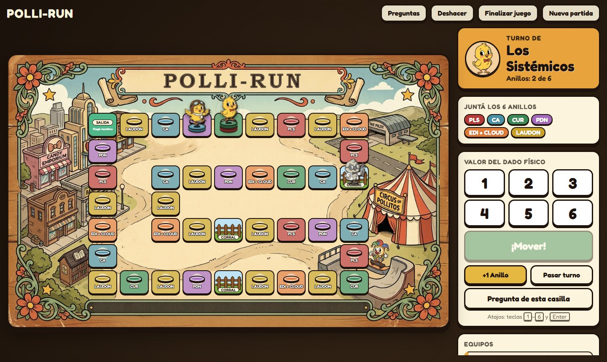
3El tablero
Una viborita en zigzag de 40 casillas que vuelve a la Salida: las fichas dan vueltas, no hay casilla final.
Casilla de temática
Sale una pregunta de esa temática.
Salida
Si caen justo ahí, eligen la temática. Al pasar o caer, se recargan los comodines.
Corral
Hay 3. Quien cae ahí pierde el próximo turno.
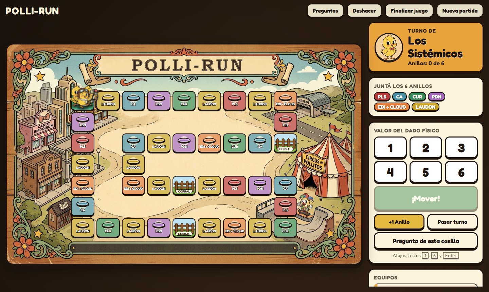
4Cómo es un turno
-
Tiran el dado
El equipo tira el dado físico y dice el número.
-
El profe mueve
Toca el número en el panel y aprieta ¡Mover!
-
LAUDON
Caen en una casilla
La ficha avanza saltito a saltito.
-
FácilDifícil
Eligen dificultad
Fácil o Difícil, ustedes deciden.
-
EliminarCambiar
Leen la pregunta
Si quieren, piden un comodín antes de responder.
-
BCorrectaCIncorrecta
Responden
Dicen la letra; el profe la toca: verde o rojo.
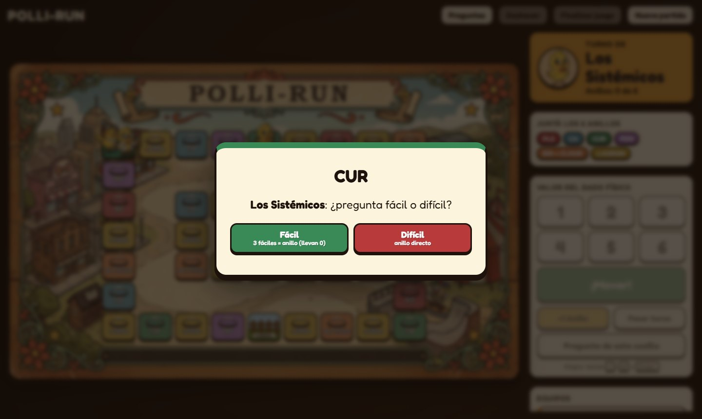
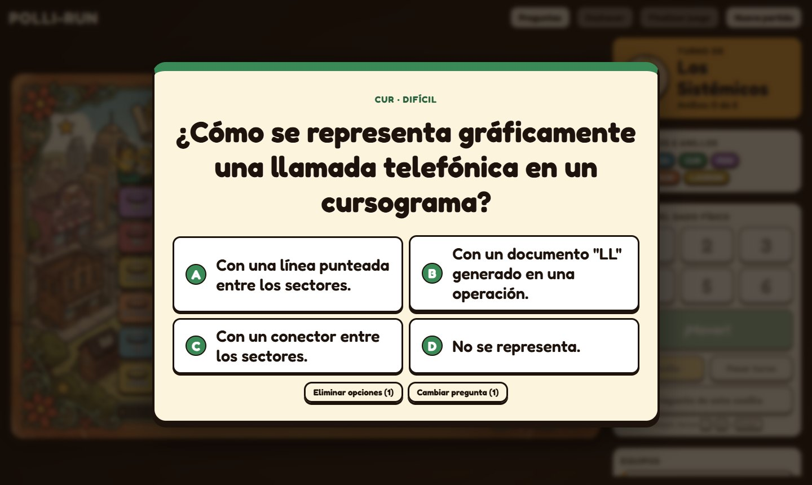
5¿Fácil o difícil?
Fácil
Bien = 1 puntito
Y siguen tirando.
Difícil
Bien = anillo directo
Y termina su turno.
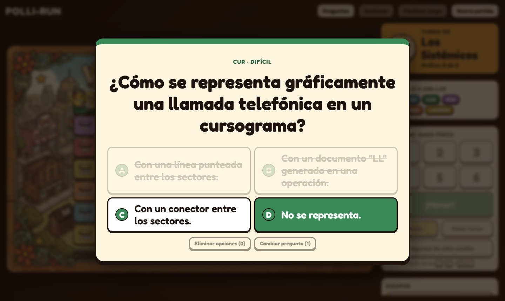
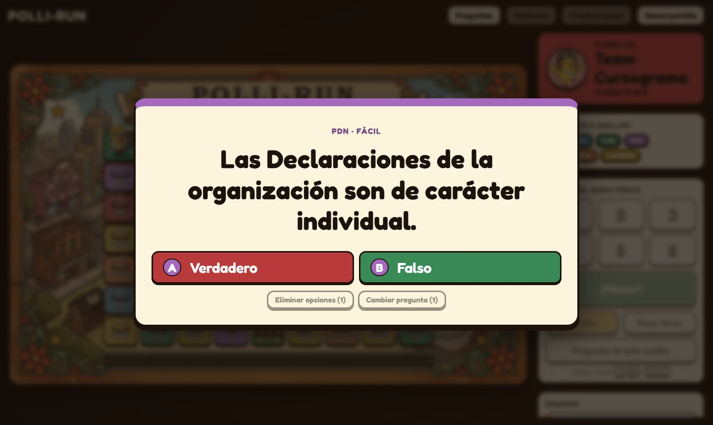
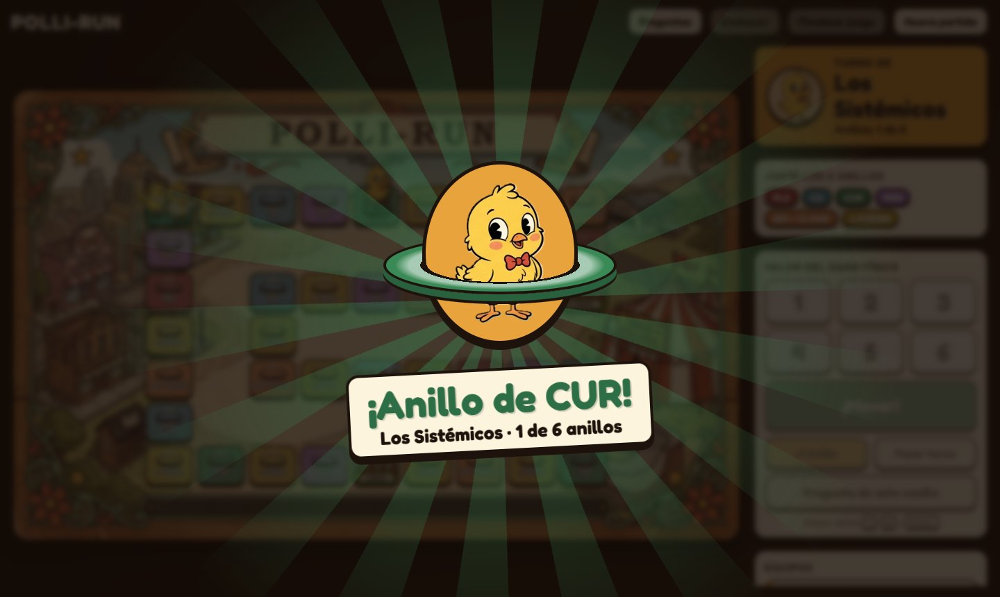
6Si aciertan, siguen tirando
Fácil = puntito + otra tirada. Difícil = anillo, pero se corta el turno. Ahí está la estrategia.
7Robo de anillos
- Eligen cualquiera de sus anillos que ustedes no tengan (no tiene que ser de la temática de la casilla).
- El otro equipo se queda sin ese anillo.
- Pueden decidir no robar.
- En la misma jugada pueden ganar el anillo de la casilla y además robar otro.
- Robar termina el turno.
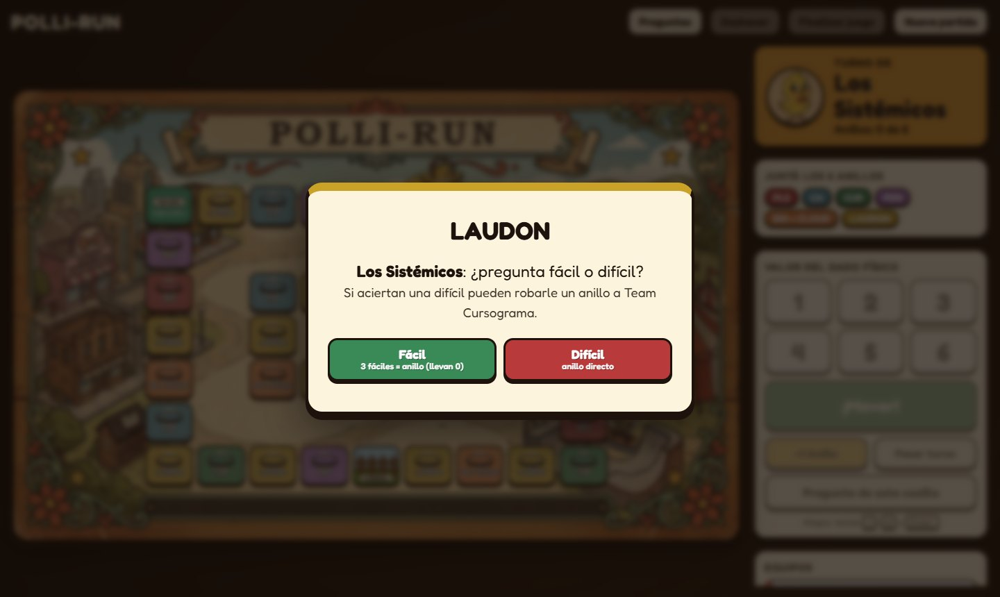
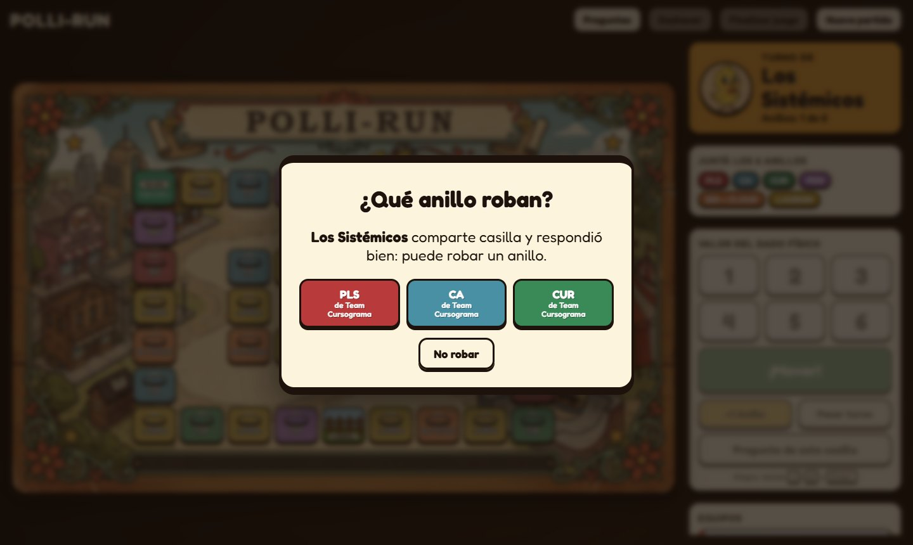
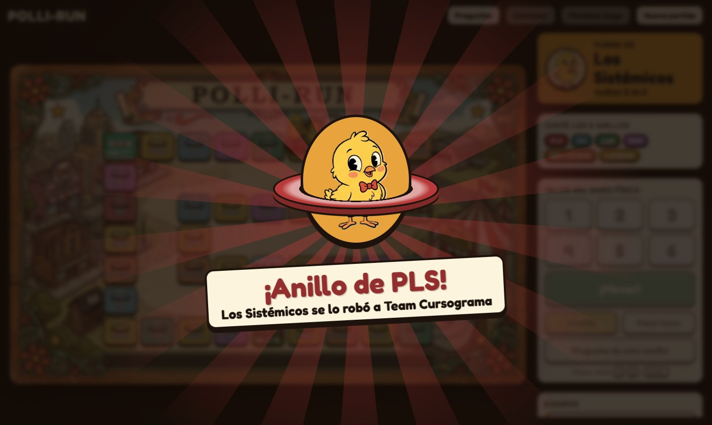
8El corral
- Si caen en el Corral no hay pregunta.
- Pierden el próximo turno.
- Su ficha se ve gris y en la lista dice En el corral
- Cuando les toca, el juego salta solo al equipo siguiente.
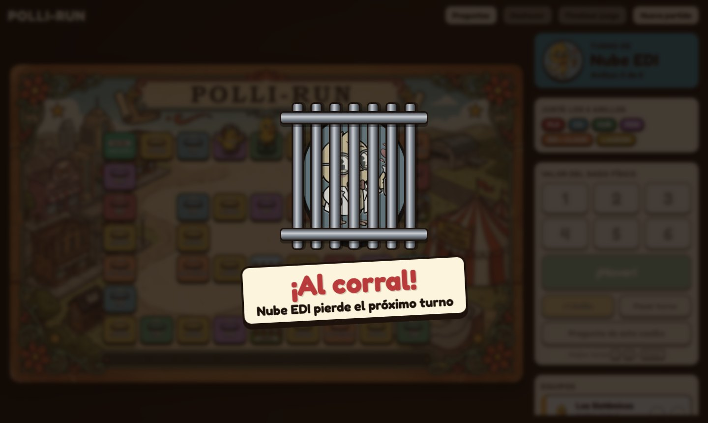
9Comodines
Cada equipo arranca con 2 comodines, uno de cada tipo. Se piden dentro de la pregunta, antes de responder.
Tacha opciones incorrectas: quedan solo 2 (la correcta y una incorrecta).
No se puede en Verdadero/Falso ni en preguntas sin opciones.
Sale otra pregunta de la misma temática y dificultad.
No se puede si no queda otra pregunta disponible.
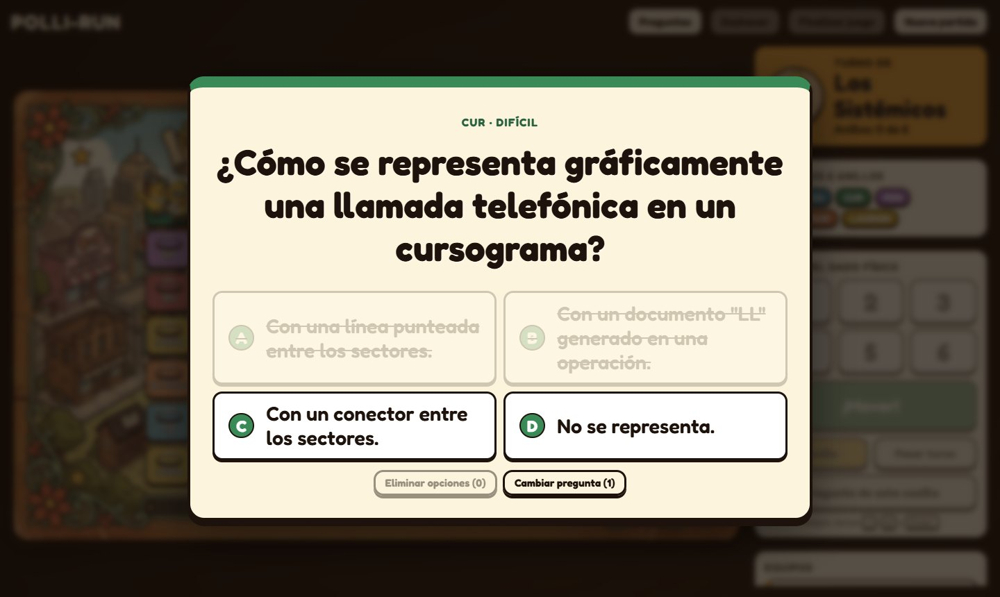
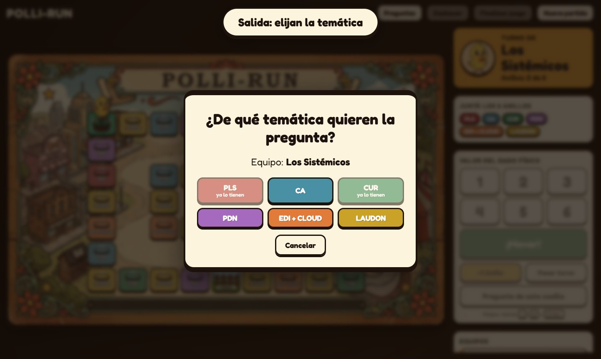
10Las preguntas
- Las acertadas no vuelven a salir.
- Las falladas o las cambiadas con el comodín pueden volver cuando se agoten las nuevas de esa temática.
- Si ya se acertaron todas las fáciles (o las difíciles) de una temática, esa dificultad se desactiva: eligen la otra o pierden el turno.
- Algunas preguntas tienen imagen (por ejemplo, cursogramas en CUR).
11¿Cómo se gana?
- Cuando un equipo junta los 6 anillos se festeja, pero el juego sigue: todavía se los pueden robar.
- El profe aprieta Finalizar juego y aparece el podio.
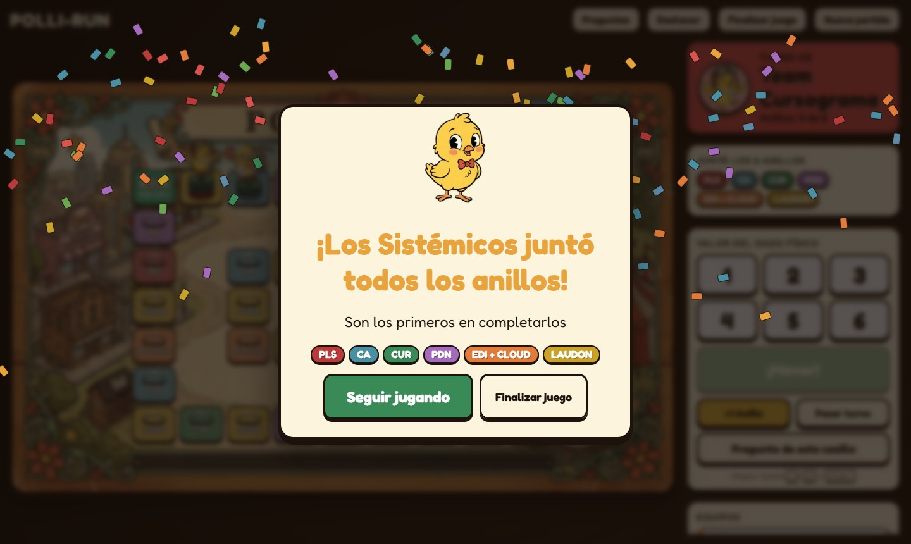
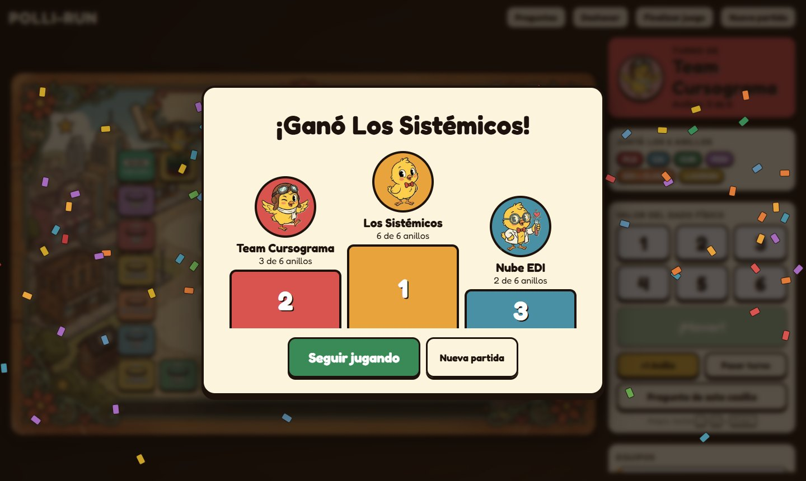
Resumen rápido
Dado físico → el profe mueve
Bien = anillo
termina el turno
Bien = puntito
3 puntitos = anillo
Bien sin anillo = siguen tirando
Mal = pasa el turno
Misma casilla + difícil bien = robo
Pierden el próximo turno
Comodines: se recargan en la Salida
Gana quien tenga más anillos cuando el profe termina el juego.
APreparar la partida
- Abrir
index.htmlcon doble clic (Chrome o Edge). No necesita internet. - El banco de SYP 2026 ya viene cargado (6 temáticas, 517 preguntas). Para otro, Cargar CSV (ver
LEEME.md). - Registrar los equipos: nombre, ficha y color. Mínimo 2; Agregar equipo para más.
- ¡Empezar partida!
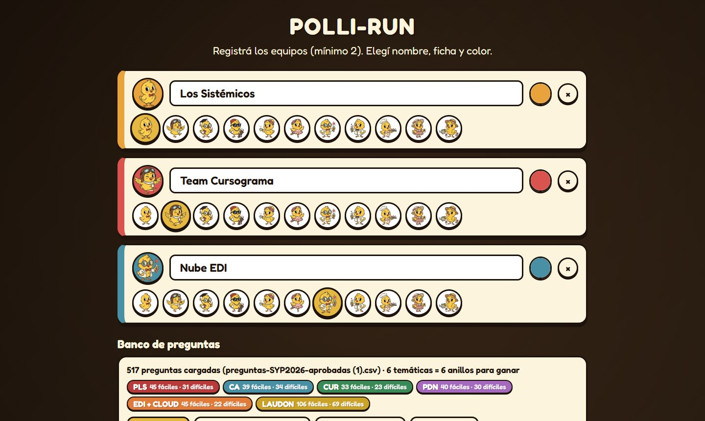
BEl panel de control
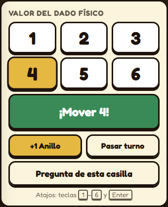
| 1–6 | El número del dado físico (o teclas 1–6). |
| ¡Mover! | Mueve la ficha (o Enter). |
| +1 Anillo | Da un anillo a mano al equipo del turno (se elige la temática). |
| Pasar turno | Salta al equipo siguiente. |
| Pregunta de esta casilla | Vuelve a sacar una pregunta donde está el equipo. |
| En la lista: da un anillo / quita el último a ese equipo. | |
| Deshacer | Revierte la última acción (hasta 30 pasos). |
| Finalizar juego | Muestra el podio. Después se puede Seguir jugando. |
| Nueva partida | Borra la partida actual y vuelve al registro. |
| Preguntas | Cargar otro CSV en plena partida. |
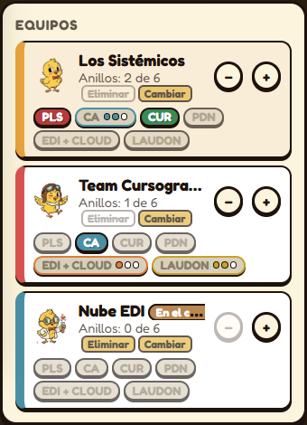
La lista de equipos
- Anillos ganados a color; los que faltan, apagados.
- = puntitos de fáciles (2 de 3).
- EliminarCambiar = comodines que quedan.
- En el corral = pierde el próximo turno.
- Arriba, la tarjeta de color muestra de quién es el turno (o “Sigue tirando”).
CAl responder
DSituaciones especiales
Toqué mal un número o una opción
Usá Deshacer.
En la Salida toqué “Cancelar”
El equipo pierde el turno. Si fue sin querer, Deshacer.
Usé “Pregunta de esta casilla” y fallaron
Con ese botón el turno no pasa solo: tocá Pasar turno.
Se cerró la pestaña o se cortó la luz
Se guarda todo solo. Al abrir de nuevo aparece Continuar partida guardada.
La escena del anillo o del corral tapa la pantalla
Se cierra sola en unos segundos, o con un clic.
ESugerencias para la dinámica
Esto no lo controla el juego; queda a criterio de ustedes.
- Que cada equipo tenga un vocero que diga la respuesta final.
- Marcar la opción recién cuando el equipo confirma (“¿última respuesta?”).
- Poner un tiempo para responder (por ejemplo, 30 s las fáciles y 60 s las difíciles).
- Avisar en voz alta cuando hay robo posible o alguien cae en el corral.